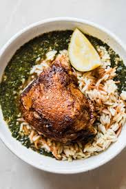

koshari is Egypt's national dish and a widely popular street food.[1] It is a traditional Egyptian staple, mixing pasta, Egyptian fried rice, vermicelli and brown lentils,[2][3] and topped with chickpeas, a garlicky tomato sauce, garlic vinegar, and crispy fried onions. Sprinklings of garlic vinegar and hot sauce are optional.
Molokhia
This iconic green soup is made from the finely chopped leaves of the jute plant, simmered in a rich broth infused with coriander and fried garlic (called the ta'leya). It has a unique, viscous texture and is traditionally served hot alongside white rice and roasted chicken or rabbit.

Ful Meddames
A cornerstone of the daily Egyptian diet, this ancient dish consists of slow-cooked fava beans seasoned with olive oil, cumin, garlic, lemon juice, and salt. It is typically served mashed or whole, eaten with warm baladi bread, and often topped with boiled eggs, tahini, or tomatoes for breakfast.